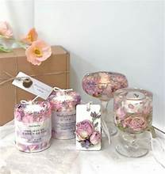
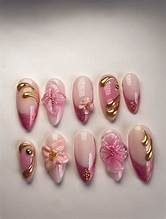
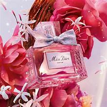

My Candle, Nails & Perfume Collection
Rose Candle

This candle feels special to me because it's simple, soft, and has that rose scent that always makes my space feel calmer.When I light it, it gives off a warm, gentle vibe that helps me slow down and breathe for a minute. It's the kind of candle that doesn't try too hard it just naturally makes the room feel nicer. I love how the roses make it feel feminine and pretty without being overwhelming. This is the type of candle I want to create for my business: something that feels personal, comforting, and easy to fall in love with.
Nail Set

My nails are one of the first things that show my personality, even before I say anything. Every color or design I choose reflects how I'm feeling or what kind of energy I want to carry that week.Doing my nails makes me feel put together, confident, and a little creative, even on days when everything else is chaotic.I love how a simple nail set can change my whole mood and make me feel more like myself. Nails is gonna be a idea for part to do part of my brand .
Luxury Pink Perfume

This luxury pink perfume feels like my signature scent — soft, feminine, and a little bit fancy without trying too hard.When I wear it, it gives me that extra boost, like I'm stepping into the best version of myself. I love how the scent stays gentle but noticeable, almost like a pretty little aura around me. It's the kind of perfume that makes me feel beautiful even on simple days.